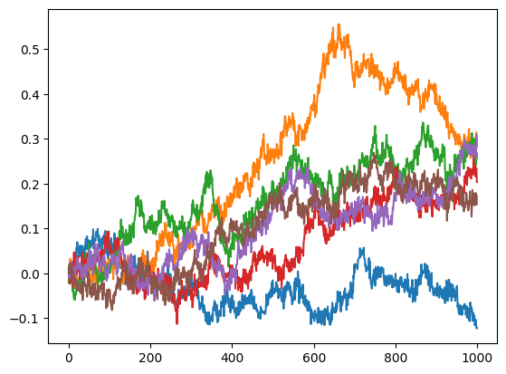
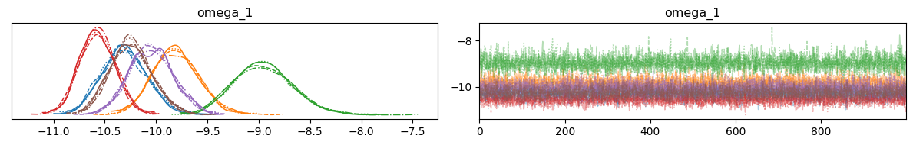

Parameters recovery, prior predictive and posterior predictive sampling#
from numpy import loadtxt
import numpy as np
from ghgf.distribution import hgf_logp, HGFDistribution
from ghgf import load_data
from ghgf.response import binary_surprise
import jax.numpy as jnp
import numpy as np
import pymc as pm
import arviz as az
import matplotlib.pyplot as plt
np.random.seed(123)
No GPU/TPU found, falling back to CPU. (Set TF_CPP_MIN_LOG_LEVEL=0 and rerun for more info.)
In this tutorial, we are going to demonstrate some forms of parameters recovery, prior predictive and posterior predictive sampling that can be a way to assess the strength of the model fitting.
Continuous HGF#
Simulate a dataset#
n_data = 6
dataset = []
for participant in range(n_data):
input_data = []
kappa_1 = 1.0
omega_1 = -10.0
omega_2 = -10.0
mu_1 = 0.0
mu_2 = 0.0
pi_1 = 1e4
pi_2 = 1e1
# two-level hierarchical gaussian random walk
for i in range(1000):
# x2
pi_2 = np.exp(omega_2)
mu_2 = np.random.normal(mu_2, pi_2**.5)
# x1
pi_1 = np.exp(kappa_1 * mu_2 + omega_1)
mu_1 = np.random.normal(mu_1, pi_1**.5)
# input node
u = np.random.normal(mu_1, 1e-4**.5)
input_data.append(u)
dataset.append(input_data)
for rw in dataset:
plt.plot(rw)

Embedding a serie of HGFs in a graphical model#
Here, we are goingin to estimate the parameter \(omega_{1}\) from the time series created by the hierarchical random walks. All the time series were generated using \(omega_{1} = -10.0\) and we want to see how the Bayesian inference can retrieve these values.
hgf_logp_op = HGFDistribution(
n_levels=2,
model_type="continuous",
input_data=dataset,
)
with pm.Model() as model:
# Priors
#-------
omega_1 = pm.Normal("omega_1", mu=0.0, sigma=2.0, shape=n_data)
pm.Potential(
"hgf_loglike",
hgf_logp_op(
omega_1=omega_1,
omega_2=-10.0,
omega_input=np.log(1e-4),
rho_1=0.0,
rho_2=0.0,
pi_1=1e4,
pi_2=1e1,
mu_1=0.0,
mu_2=0.0,
kappa_1=1.0,
bias=0.0,
omega_3=jnp.nan,
rho_3=jnp.nan,
pi_3=jnp.nan,
mu_3=jnp.nan,
kappa_2=jnp.nan
),
)
pm.model_to_graphviz(model)

with model:
idata = pm.sample(chains=4, cores=4, tune=1000)
Auto-assigning NUTS sampler...
Initializing NUTS using jitter+adapt_diag...
Multiprocess sampling (4 chains in 4 jobs)
NUTS: [omega_1]
100.00% [8000/8000 00:56<00:00 Sampling 4 chains, 0 divergences]
Sampling 4 chains for 1_000 tune and 1_000 draw iterations (4_000 + 4_000 draws total) took 56 seconds.
az.plot_trace(idata);
plt.tight_layout()

az.summary(idata)
| mean | sd | hdi_3% | hdi_97% | mcse_mean | mcse_sd | ess_bulk | ess_tail | r_hat | |
|---|---|---|---|---|---|---|---|---|---|
| omega_1[0] | -10.306 | 0.222 | -10.708 | -9.893 | 0.003 | 0.002 | 4878.0 | 3253.0 | 1.0 |
| omega_1[1] | -9.808 | 0.224 | -10.225 | -9.392 | 0.003 | 0.002 | 4979.0 | 3106.0 | 1.0 |
| omega_1[2] | -8.955 | 0.286 | -9.501 | -8.449 | 0.004 | 0.003 | 4591.0 | 2737.0 | 1.0 |
| omega_1[3] | -10.572 | 0.173 | -10.876 | -10.238 | 0.002 | 0.002 | 5357.0 | 3265.0 | 1.0 |
| omega_1[4] | -10.045 | 0.213 | -10.436 | -9.640 | 0.003 | 0.002 | 5154.0 | 3435.0 | 1.0 |
| omega_1[5] | -10.242 | 0.200 | -10.596 | -9.846 | 0.003 | 0.002 | 5661.0 | 3163.0 | 1.0 |
Binary HGF#
Simulate a dataset#
n_data = 10
dataset = []
for participant in range(n_data):
input_data = []
omega_2 = -1.0
mu_2 = -1.0
for i in range(1000):
# x2
pi_2 = np.exp(omega_2)
mu_2 = np.random.normal(mu_2, pi_2**.5)
# x1
s2 = 1/(1+np.exp(-mu_2)) # sigmoid function
u = np.random.binomial(n=1, p=s2)
input_data.append(u)
dataset.append(input_data)
Bayesian inference#
hgf_logp_op = HGFDistribution(
n_levels=2,
model_type="binary",
input_data=dataset,
response_function=binary_surprise,
)
with pm.Model() as two_levels_binary_hgf:
omega_2 = pm.Uniform("omega_2", -5.0, 0.0, shape=n_data)
pm.Potential(
"hgf_loglike",
hgf_logp_op(
omega_1=jnp.nan,
omega_2=omega_2,
omega_input=jnp.nan,
rho_1=0.0,
rho_2=0.0,
pi_1=0.0,
pi_2=1e4,
mu_1=jnp.nan,
mu_2=0.0,
kappa_1=1.0,
bias=0.0,
omega_3=jnp.nan,
rho_3=jnp.nan,
pi_3=jnp.nan,
mu_3=jnp.nan,
kappa_2=jnp.nan
),
)
Visualizing the model#
pm.model_to_graphviz(two_levels_binary_hgf)

Sampling#
with two_levels_binary_hgf:
two_level_hgf_idata = pm.sample(chains=4)
Auto-assigning NUTS sampler...
Initializing NUTS using jitter+adapt_diag...
---------------------------------------------------------------------------
SamplingError Traceback (most recent call last)
Cell In[14], line 2
1 with two_levels_binary_hgf:
----> 2 two_level_hgf_idata = pm.sample(chains=4)
File /opt/hostedtoolcache/Python/3.9.16/x64/lib/python3.9/site-packages/pymc/sampling/mcmc.py:486, in sample(draws, step, init, n_init, initvals, trace, chains, cores, tune, progressbar, model, random_seed, discard_tuned_samples, compute_convergence_checks, callback, jitter_max_retries, return_inferencedata, keep_warning_stat, idata_kwargs, mp_ctx, **kwargs)
484 # One final check that shapes and logps at the starting points are okay.
485 for ip in initial_points:
--> 486 model.check_start_vals(ip)
487 _check_start_shape(model, ip)
489 # Create trace backends for each chain
File /opt/hostedtoolcache/Python/3.9.16/x64/lib/python3.9/site-packages/pymc/model.py:1768, in Model.check_start_vals(self, start)
1765 initial_eval = self.point_logps(point=elem)
1767 if not all(np.isfinite(v) for v in initial_eval.values()):
-> 1768 raise SamplingError(
1769 "Initial evaluation of model at starting point failed!\n"
1770 f"Starting values:\n{elem}\n\n"
1771 f"Initial evaluation results:\n{initial_eval}"
1772 )
SamplingError: Initial evaluation of model at starting point failed!
Starting values:
{'omega_2_interval__': array([-0.03413182, -0.52470122, 0.75366764, -0.576323 , 0.09023423,
0.38215204, 0.11451154, -0.09766403, -0.50194456, 0.14039799])}
Initial evaluation results:
{'omega_2': -14.26, 'hgf_loglike': -inf}
az.plot_trace(two_level_hgf_idata);
plt.tight_layout()
az.summary(two_level_hgf_idata)